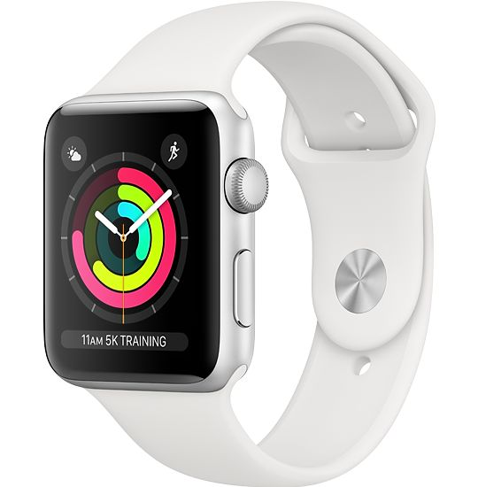

Amy
Huang

Series H1
This project - which I call the smartwatch hypothesis - is a proposed design based on Apple's smartwatch series.
Introduction
In the contemporary technology market, there is an increasing demand for devices to be seamlessly interwoven with our daily lives: effective, convenient, and invisible. Apple watches answers to this with its intergrated brand ecosystem and minimal, user-friendly design. Perhaps this is why it's one of the most loved and widely used smartwatch brands. The question is: what's next? Here is my hyposthesis:
Competitive Analysis
Of course, almost every product exists in a context of competitors. There are watches like the DZ09 which are a lot more affordable, but often at the cost of performance quality. There are watches that mimic the look of classic analogue watches like the Samsung Gear S2, and then there are those like the Samsung Gear S which feature a curved screen somewhat similar to my proposed design but these longer screens often lead the design toward mimicking cellphones - even in their interfaces - which make them overly complex.


The Problem

Whether it's Apple's current design or the products of competing brands, one reoccuring theme that persists in most smart watch designs is the tendency to be influenced by the square screen or the analogue clock.
However, smartwatches no longer face the same restrictions as its mechanic ancestors, nor do they have to be screens on a strap. They are wearables that interact closely with the human body and should be treated as such.
The inspiration for my design comes from two main sources: the directionality of our wrists and interface foundations, and of the relative position of our wrists to our eyes most of the time.
Imagine if you typing on a keyboard or holding a cup of coffee. Where would the watch surface be? Now try to check the time without spilling your coffee.

Thinking further about the inherent direction of our movement with putting on a watch, I later decided to also pose a hypothesis for what a watch strap could look like, inspired by the aesthetics and materials used in Apple's most popular designs.
Design

To ensure that the design was technologically plausable, I took apart one of Apple's series 3 watches and took measurements to form the "green block" which would probably be more accurate if it was black instead of green because it represents the black box of technological expertise that I do not have, but made sure I left room for in my design. What excites me about this is that, with developments in technology and a reconfiguration of this part of the watch to fit a design like mine, the size of the "green block" can be reduced to enable a tinner and slicker design.
Main Body


From left to right, these parts are: the sensor that sits at the bottom of Apple watches that detects heartrate and other biological information, the body structure of my design, the buttons, the "green block", and the curved touch screen essential to my proposed form of interaction.
Buttons

Strap
Hover!


This original strap design features
1. A clip in end with small buttons (like the strap attachment on Apples current design) which are more difficult to press and not used very often
2. A clip in end with a larger more accessible button that is used to take the watch on and off
3. An adjustment feature that leads on from the hand's position and motion after clipping the watch in
With these features, the way that the watch is put on follows the flow of the wrist's circumference and echoes the proposed form of interaction with the watch interface itself.
UIUX
From observations of people's positions typical positions when working and going about daily activities, I noticed that the "default" position of our wrists have not the back of the hand but the side closest to our bodies facing us.

Hence, this interface proposes that, when the watch is at rest, the time remains visible at the bottom of the screen which rests on the upper inside area of the wrist. The user swipes the time up to enlarge it and see notifications.

Then, following this motion, the full display is swiped up to enter the home screen display.

The rest state lock screen features no display on most of the screen to save energy and a small display of the time at the bottom - a feature that can be turned off or changed to be responsive to a shaking motion.

The lock screen has a larger time display and an area for notifications.

The home screen uses a primarily up and down motion for navigation, with the center - the top of the curve - displaying the most important information. The bottom, which is now no longer easily visible as the user has turned their wrist, becomes a navigation aid area for the thumb to operate.

Programs used in the creation of this product include
Programs used in the compliation of this product for presentation include
Special thanks to Adam Smith for your faith, guidance, and love for what you teach.